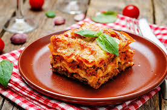

Make this zucchini lasagna recipe for a delicious low-carb dinner that'll satisfy your Italian food craving. It's perfect in the summer with garden-fresh veggies and herbs, or in the winter when you need a comforting meal. You won't even miss the noodles in this one!
This zucchini lasagna recipe might be low in carbs, but it’s high in flavor!